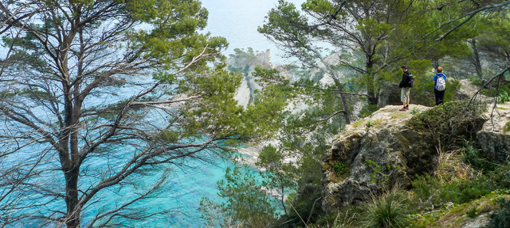
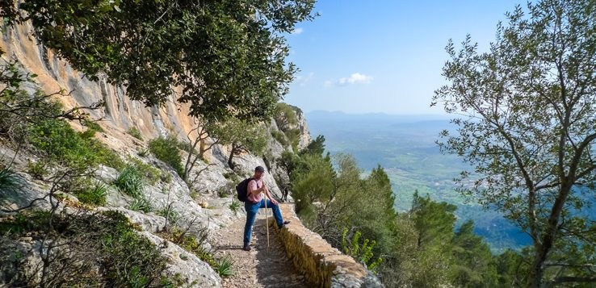

Mallorca gehört zu den beliebtesten Reisezielen Europas und ist schon lange nicht mehr nur als Party- oder Badeinsel bekannt.
Immer mehr Wanderbegeisterte lernen die Balleareninsel von einer ganz anderen Seite kennen. Wer sich die Zeit nimmt, die Insel zu Fuß zu erkunden, entdeckt das Zusammenspiel von Meer und Bergen, Flora und Fauna, Land und Leuten unter völlig neuen Gesichtspunkten, macht Bekanntschaft mit Jahrtausende alten Tälern und Bergdörfern, in denen die Zeit stehen geblieben zu sein scheint.
Mallorcas erster Fernwanderweg, die Trockensteinroute – liebevoll „Ruta de pedra en sec“ von den Mallorquinern genannt – ist nicht das einzige Highlight für naturverbundene Aktivurlauber. Es gibt noch eine ganze Menge mehr zu Fuß zu entdecken, sowohl für erfahrene Outdoorfans als auch für Ungeübte und Einsteiger.